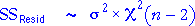
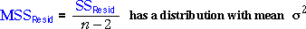

Chi-squared distributions and degrees of freedom
As with other partitions of the total sum of squares, the explained and residual sums of squares have chi-squared distributions when the data are sampled from a model with certain characteristics. The degrees of freedom associated with these sums of squares again add to the total degrees of freedom, n - 1.
Distribution of the residual sum of squares

Demonstration
The diagram allows samples to be selected from a normal linear model with σ = 1. The value of β1 can be adjusted with the slider on the right.
Use the slider to adjust the underlying model's slope and observe that the residuals (and residual sum of squares) remain the same. A non-zero slope therefore has no effect on the distribution of the residual sum of squares.
Click Take sample several times to build up the distribution of the residual sum of squares and repeat for different sample sizes and underlying model slopes. Observe that:
The distribution of the residual sum of squares is the same whether or not the model's slope is zero.
Estimate of the error variance
Since the mean of a chi-squared distribution equals its degrees of freedom, the mean residual sum of squares is always a good (unbiased) estimate of the error variance of the model, σ2.

Distribution of the explained sum of squares
Only when the explanatory variable has no effect on the response (the population slope is zero)...
The explained sum of squares only has a chi-squared distribution when β1 is zero. If it is non-zero, the distribution of the explained sum of squares has a larger mean.
Demonstration
In the next diagram, the underlying normal linear model's slope can again be adjusted using the slider.
Change the slope to 1.0 and take several samples. Observe that the distribution of the explained sum of squares is higher than the chi-squared distribution that would be expected if the underlying slope was zero.
Observe also that the explained sum of squares tends to be highest: